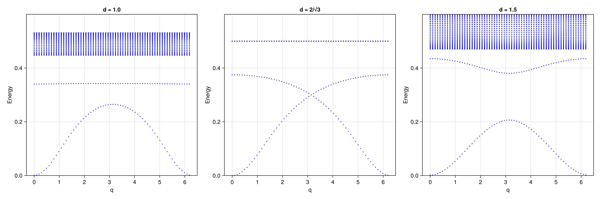

Example: Ferromagnetic Excitations in the Tasaki Model
This example computes the particle-hole excitation spectrum of the Tasaki flat-band ferromagnet using the Tamm-Dancoff approximation (TDA) on top of Hartree-Fock. The Tasaki model is a decorated lattice model that supports an exact ferromagnetic ground state when the flat band is half-filled, providing a rigorous test case for the excitation solver.
Physical Model
The Tasaki model is defined on a one-dimensional decorated lattice with two sublattices A (hub) and B (rim):
\[H = t \sum_{\langle ij \rangle \in \text{A-A},\sigma} c^\dagger_{i\sigma}c_{j\sigma} + td \sum_{\langle ij \rangle \in \text{A-B},\sigma} c^\dagger_{i\sigma}c_{j\sigma} + \sum_\sigma \left(\mu_A \sum_{i \in A} n_{i\sigma} + \mu_B \sum_{i \in B} n_{i\sigma}\right) + \sum_{\alpha} U_\alpha \sum_{i \in \alpha} n_{i\uparrow}n_{i\downarrow}\]
\[t = 1\]
: A-A hopping\[td\]
: A-B hopping, controlled by the parameter $d$\[\mu_A = 2t\]
, $\mu_B = td^2$: on-site potentials tuned to produce a flat band\[U_A = U_B = t\]
: on-site Hubbard interaction on both sublattices
The B sublattice has no direct hopping ($t_{BB} = 0$). When the parameters satisfy the flat-band condition, the single-particle spectrum contains a completely dispersionless band. At quarter filling (one electron per site on the flat band), the ground state is an exact ferromagnet.
The parameter $d$ controls the band structure:
- $d = 1$: generic case with a gap between the flat band and the dispersive band
- $d = 2/\sqrt{3}$: critical point where the flat band touches the dispersive band (Dirac-like crossing)
- $d = 1.5$: larger hybridization, increased gap
Method
The calculation uses momentum-space Hartree-Fock (solve_hfk) on a 1D $k$-grid of 64 points along the chain direction. The ferromagnetic ground state is found via symmetry-breaking restarts. The particle-hole excitation spectrum is then computed using solve_ph_excitations with solver=:TDA and n_list=[1,2] to restrict the particle space to the two lowest bands.
Code
dofs = SystemDofs([Dof(:cell, 1), Dof(:sub, 2, [:A, :B]), Dof(:spin, 2, [:up, :dn])])
kpoints = [[r, 0.0] for r in range(0, 2pi, length=65)[1:end-1]]
n_elec = length(kpoints) # quarter filling (1 electron per k-point)
for d in [1.0, 2.0/sqrt(3), 1.5]
mub = t * d^2
# Hopping: A-A with amplitude t, A-B with amplitude t*d, B-B = 0
onebody_h = generate_onebody(dofs, nn_bonds,
(delta, qn1, qn2) -> begin
qn1.spin !== qn2.spin && return 0.0
qn1.sub == qn2.sub == 2 && return 0.0
qn1.sub == qn2.sub == 1 && return t
return t * d
end)
# On-site potential
onebody_m = generate_onebody(dofs, onsite_bonds,
(delta, qn1, qn2) -> begin
qn1.spin !== qn2.spin && return 0.0
qn1.sub == 1 ? mua : mub
end, order = (cdag, :i, c, :i))
hf = solve_hfk(dofs, onebody, twobody, kpoints, n_elec;
n_restarts = 10, field_strength = 1.0, n_warmup = 15, tol = 1e-12)
ph = solve_ph_excitations(dofs, onebody, twobody, hf, kpoints, [[2pi, 0.0]];
n_list = [1, 2], solver = :TDA)
endRole of n_list
The n_list=[1,2] parameter restricts the unoccupied (particle) states to bands 1 and 2, excluding bands 3 and 4. This is physically motivated: in the Tasaki model, the relevant low-energy excitations involve transitions within the two lowest bands (the flat band and its adjacent dispersive band). Including higher bands introduces artificial level repulsion that opens a spurious gap at the band-crossing point.
Running the Example
julia --project=examples examples/Tasaki/tasaki.jlThe script will:
- Loop over three values of $d = 1.0,\ 2/\sqrt{3},\ 1.5$
- For each $d$, solve the HF ground state and compute the TDA excitation spectrum
- Plot all three spectra as separate panels and save to
docs/src/fig/tasaki.png
Results

Three panels show the TDA particle-hole excitation spectrum for different values of $d$:
- $d = 1.0$ (left): The flat band is well separated from the dispersive band. The excitation spectrum shows a clear gap.
- $d = 2/\sqrt{3}$ (center): At the critical hybridization, the flat band touches the dispersive band, producing a gapless Dirac-like crossing in the excitation spectrum at $q = \pi$.
- $d = 1.5$ (right): Larger hybridization reopens the gap in the excitation spectrum.
The gapless point at $d = 2/\sqrt{3}$ is a characteristic feature of the Tasaki model and provides a stringent test of the TDA solver: the excitation gap must close exactly at this parameter value.
References
[1] W.-T. Zhou, Z.-Y. Dong, and J.-X. Li, Interaction-Driven Spin Polaron in Itinerant Flat-Band Ferromagnetism, arXiv:2602.09545.